Bootstrap UI 编辑器
以下は、15の最高のBootstrapエディターまたはオンライン編集ツールです。
1. Bootstrap Magic
これはBootstrapテーマジェネレーターで、最新のBootstrap 3とAngular JSバージョンを使用し、ライブなユーザー変更プレビューを提供します。さまざまなインポート、カラーピッカー、スマートなインクリメンタルサーチ（先読み入力）が含まれています。さらにすごいのは、Bootstrapがユーザーの各選択に基づいてフレームワークを再構築し、ユーザーがダウンロードして使用するのに便利なことです。
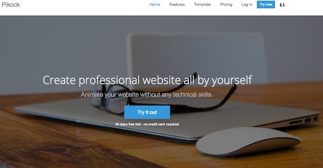
2. BootSwatchr
BootSwatchrはDrew Strickiandによって独立して開発・保守されており、右から左への言語表示をサポートする唯一のBootstrapカスタムビルドツールです。これも特徴の一つです。BootSwatchrはビジュアルツールで、ゼロからBootstrapテーマを作成できます。

3. Bootstrap Live Editor
Bootstrap Live Editorは、WYSIWYG方式でBootstrapを構築するエディターです。Bootstrapで用意されたコンテンツとコードスニペットに基づいて、HTMLを編集・美化するための優れたエレガントな方法を提供するため、賢明な選択です。それに加えて、ボタン設定、カスタムタグ、ユーザーにとって最も賢明で有益な選択肢などの高度なオプションも含まれています。
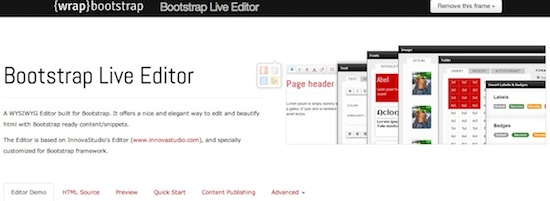
4. Fancy Boot
Fancybootは非常に便利なBootstrapカスタマイズツールで、ユーザーがBootstrapの設定を編集し、その変更結果を自動的にプレビューできます。スライドメニューで使用したいプラグインとコンポーネントを選択できます。ユーザーが変更を行うと、使用しているjQueryプラグインを含むコンパイル済みかつミニファイされたCSSファイルをダウンロードできます。
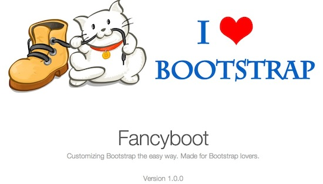
5. Style Bootstrap
Style Bootstrapは、ブラウザ内で動作する非常に優れたGUIユーティリティであり、ユーザーがTwitter Bootstrapの外観をカスタマイズするのに役立ちます。カスタマイズ操作は非常に簡単です。bodyスタイル、タイポグラフィ、ボタン、ナビゲーション、フォーマット、通知アラートなど、ユーザーが自分の好みに合わせて簡単にカスタマイズできる要素に対応しています。強力なカスタマイズ機能に加えて、ダウンロード可能なCSSファイルを簡単に生成することもできます。
。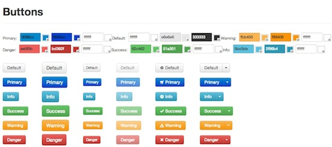
6. Lavish
Lavishは、ユーザーが画像から好みのBootstrap配色スキームをカスタマイズするのを支援します。ユーザーは画像からさまざまな色を選択し、bodyの背景、リンク、ヘッダー、メニュー、ラベル、テキスト、ドロップダウンメニューなどの要素に適用できます。Bootstrapの配色スキームが決まったら、対応するBoostrap.cssファイルを簡単にダウンロードできます。

7. Bootstrap ThemeRoller
Bootstrap ThemeRollerは直感的なWebアプリケーションで、ユーザーが自分のスタイルに合わせてBootstrapテーマを作成するための視覚的なインターフェースを提供します。このツールを使えば、ユーザーは色、サイズ、フォント、フォーマット、テーブル、ボタン、警告メッセージ、ナビゲーションバー、メニューなどの要素をカスタマイズできます。
このアプリは、ユーザーが作成するすべてのスタイルに対してユニークなURLを生成するため、ユーザーのすべての設定を保存することができます。さらに驚くべきことに、ユーザーが離れる際には、カスタマイズしたページを停止または復元することができます。
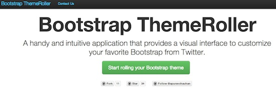
8. LayoutIt!
LayoutIt！はドラッグ＆ドロップインターフェース機能を備えており、Bootstrapのフロントエンドコードを簡単かつ迅速に構築できます。LayoutIt！はあらゆるプログラミング言語と互換性があり、ユーザーはHTMLをダウンロードして、自由にコーディングやデザインを行うことができます。
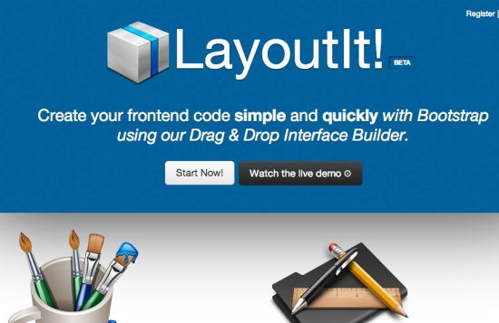
9. Pingendo
Pingendoはビジュアルなデスクトップアプリケーションであり、ユーザーが人気のあるTwitter Bootstrapフレームワークを使用してレスポンシブWebページのプロトタイプを作成できるようにします。Pingendoはまた、豊富な既製レイアウト、ドラッグ＆ドロップによる要素配置、サイズ調整、カスタマイズ機能を提供します。ユーザーは自分のページを最適化し、自分のコンテンツを挿入することができます。

10. Kickstrap
KickstrapはBootstrap UIエディターで、Firebaseをバックエンドサービスとして使用します。Bootstrapと最高水準のWeb技術をシームレスに統合します。さらに優れているのは、認証済みでローカルバックエンドを必要としない、データベース駆動型のWebアプリケーションを実行できることです。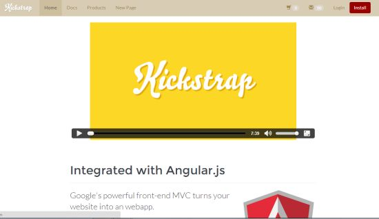
11. Bootply
Bootply は素晴らしい Bootstrap UI 編集ツールであり、ユーザーが Bootstrap 対応の CSS、HTML、JavaScript をできるだけ簡単に編集できるようにします。また、ドラッグ＆ドロップ可能なビジュアルエディターでもあり、Bootstrap フレームワークの設計、プロトタイプ作成、テストに使用できます。Bootply にはコードリポジトリがあり、Bootstrap のコードスニペット、例、テンプレートが含まれています。これらに加えて、より魅力のなのは、非常に活発な Bootply コミュニティがあり、ユーザーが関連するコードやスニペットを簡単に見つけ、共有し、展示できることです。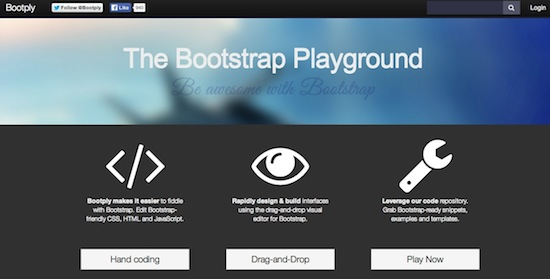
12. X-editable
X-Editable は拡張ライブラリで、ユーザーがページのポップアップやインラインモードなどの編集可能な要素を作成できるようにします。ネイティブの Bootstrap、jQuery UI、または純粋な jQuery 編集機能を提供します。この Bootstrap UI エディタには、クライアント側/サーバー側の検証、キーボードサポート、live イベント、カスタマイズ可能なコンテナ領域など、多くの強力な機能があります。要するに、非常に迅速な開発機能、フィールドの簡単な削除、データを更新するためのシンプルなバックエンドスクリプトを提供します。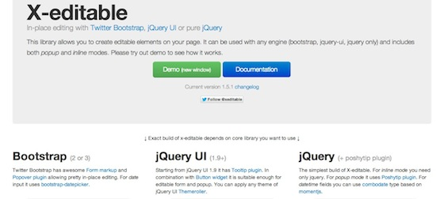
13. Jetstrap
Jetstrapが単なるモックアップツールであると誤解しないでください。Jetstrapは100%ウェブインターフェースベースのTwitter Bootstrap構築ツールです。ユーザーはどんな種類のソフトウェアもダウンロードする必要はなく、Jetstrapを使用できます。ユーザーはログインして自分のプロジェクトを構築するだけで、いつでもどこでもアクセスできます。構築機能は主に開発者とデザイナー向けに提供されており、ユーザーはJetstrapを通じて簡単に美しいウェブサイトを生成でき、しかも動作速度は非常に速いです。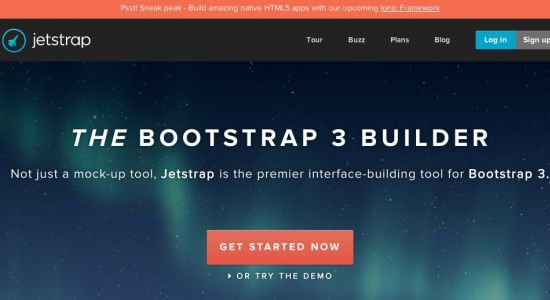
14. DivShot
DivShot である个快速の、可视化の前端开发文本编辑器，跟mockup工具のようにシンプルで整然としている。各種フレームワークに必要な各種カスタムコンポーネントライブラリを含んでおり、これは、それが提供する最良のツールの一つである。その他にも、ユーザーがテーマを変更できるテーマコンバーターも含まれている。試用版は無料だが、試用期間が過ぎると、元のサービスを維持するために自己負担で支払う必要がある。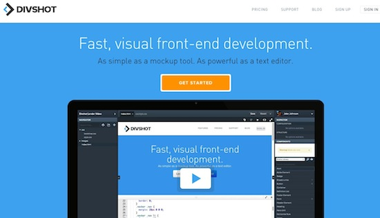
15. PaintStrap
PaintStrap は、Adobe kuler/COLOURlovers のカラーパレットを使用して、美しい Twitter Bootstrap テーマを生成します。このツールはインストールが非常に簡単で、CSSファイルのダウンロードも簡単で、別の標準ファイルに置き換えることも簡単です。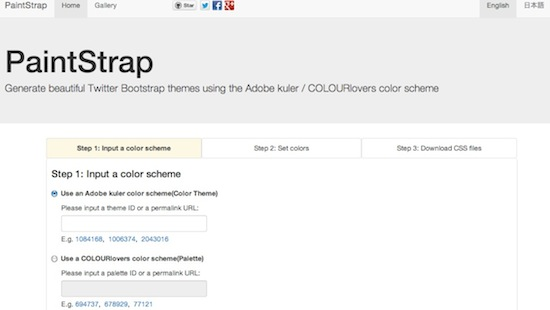
其他扩展